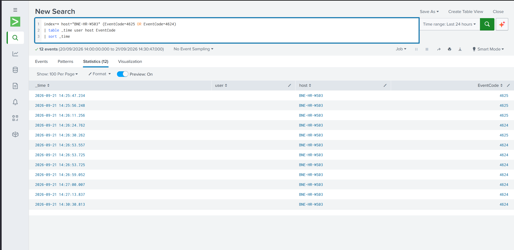
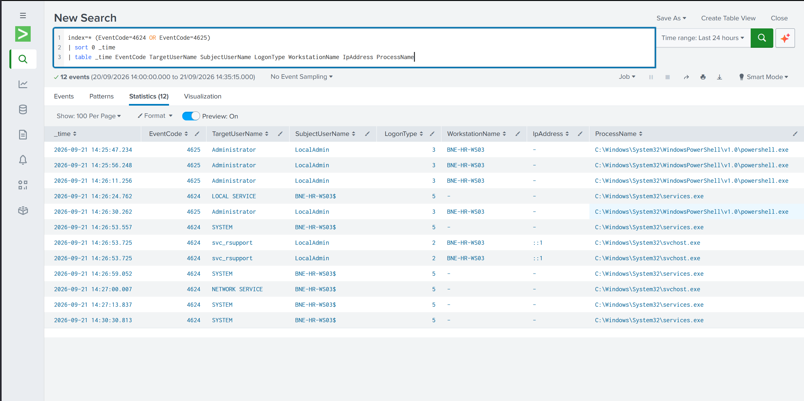
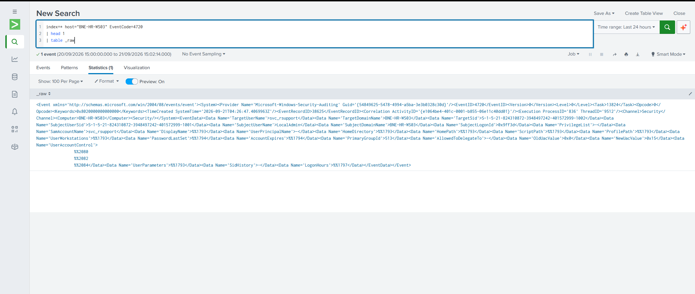
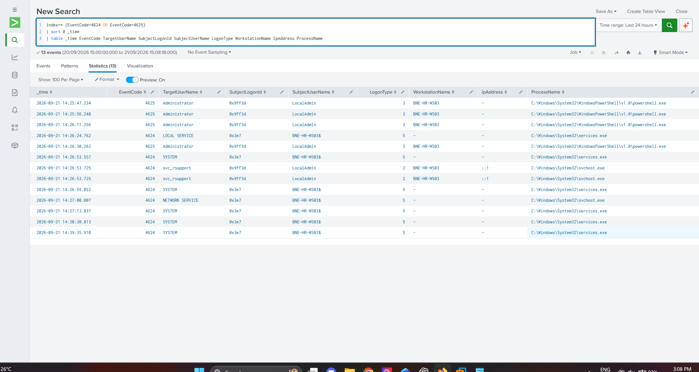
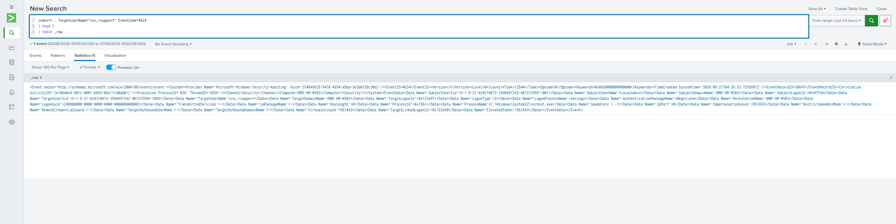
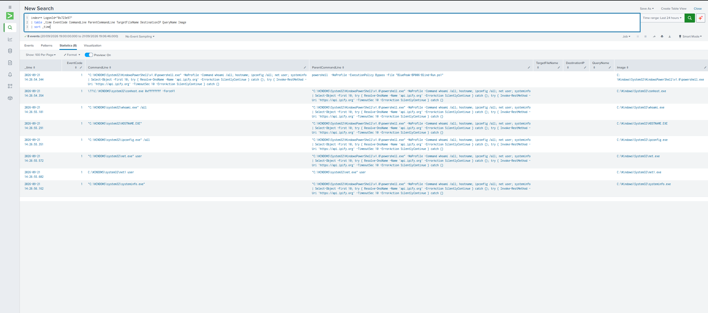
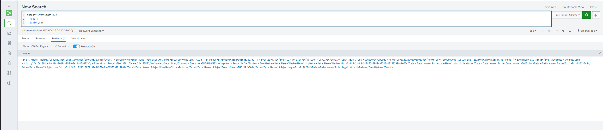
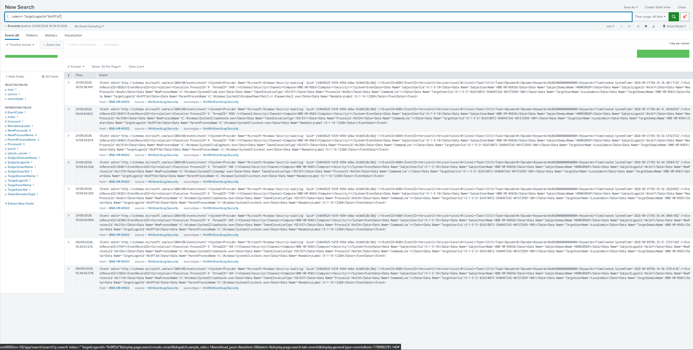

BP-006
Unauthorized Local Account Creation & Privilege Escalation
Suspected account-persistence activity on an HR endpoint, traced from repeated failed administrator logon attempts through creation and privileged elevation of an undocumented local account.
SUMMARY
Executive summary
Investigation began from three separate alerts on BNE-HR-WS03: multiple failed local logon attempts, creation of a new local administrator account and a non-interactive PowerShell session. Correlating Windows Security telemetry established that the alerts formed a single event chain.
LocalAdmin, tied to logon session 0x9ff3d, generated repeated failed network logon attempts (LogonType 3) against the built-in Administrator account. Seconds later, the same session created svc_rsupport and added it to the local Administrators group. svc_rsupport then authenticated interactively and executed host and network discovery commands.
Neither LocalAdmin nor svc_rsupport was recognized by the available BluePeak systems of record. No documented change, ticket or vendor engagement accounted for the activity. The CMDB identified ITSupport as the approved local administrator account for the asset.
Disposition: Malicious — suspected compromise, high confidence. Escalation to Tier 2/IR and containment of the affected endpoint/account were recommended pending deeper validation.
TIMELINE
Key evidence
Process-creation events using session identifier 0x9ff3d were present as far back as 09/09. No originating logon event for that identifier was available, so continuity of the session could not be established.
Session 0x9ff3d spawns cmd.exe, parent powershell.exe.
Four failed network logon attempts (Event 4625, LogonType 3) target Administrator, all attributed to session 0x9ff3d.
LocalAdmin / 0x9ff3d creates svc_rsupport (4720). The same session adds its SID to the local Administrators group (4732).
svc_rsupport authenticates interactively (4624, LogonType 2, source ::1) and receives its own logon session.
The new session executes identity, hostname, network, local-account and system discovery commands followed by DNS/HTTPS-related commands. Execution was established; successful outbound communication was not.
INVESTIGATION
Key SPL
index=* (EventCode=4624 OR EventCode=4625)
| table _time EventCode TargetUserName SubjectLogonId SubjectUserName
LogonType WorkstationName IpAddress ProcessName
| sort _timeindex=* TargetLogonId="0x9ff3d"
| table _time EventCode TargetUserName SubjectUserName
SubjectLogonId host
| sort _timeindex=* LogonId=0x723e97 (EventCode=3 OR EventCode=22)
| table _time User EventCode Image DestinationIp DestinationPort
DestinationHostname QueryName
| sort _timeindex=* EventCode=4732
| table _time SubjectUserName SubjectLogonId MemberSid TargetUserName
| sort _timeInitial Alert Triage
The first Security-log review established the authentication activity visible during the shift before relationships between individual events were assumed.

Failed Logons and Account Creation
Expanded authentication fields exposed repeated failures against Administrator followed by activity involving svc_rsupport. Timing created a correlation hypothesis rather than proof on its own.

Account Creation Raw Event
The raw 4720 event confirmed creation of svc_rsupport, recorded its SID and identified SubjectLogonId 0x9ff3d as the session performing the action.

Session Correlation Confirmed
The relevant logon-session fields established the correlation key: 0x9ff3d tied the failed attempts and account-management activity to the same origin session, replacing time proximity with direct evidence.

svc_rsupport Session Established
A raw 4624 event showed svc_rsupport authenticating interactively and receiving TargetLogonId 0x723e97, providing a new pivot for activity performed by the created account.

Discovery Command Chain
The new session included identity, hostname, network, local-account and system discovery. This established post-logon discovery without assuming that later network-oriented commands successfully communicated externally.

Group Membership SID Match
The 4732 event identified the added principal by SID. Matching MemberSid against the SID assigned during the 4720 creation event confirmed that svc_rsupport was added to the local Administrators group.

Unexplained Session History
A broader search found older routine process activity associated with 0x9ff3d. Without its originating logon event, the evidence could not establish whether this represented one continuous session, identifier reuse or a lab lifecycle artifact.

ANALYSIS
Analyst Reasoning
Triage began from the failed-logon alert. Nearby account-creation activity was treated as potentially related, but timing alone was not used to establish causation. Correlating the Windows Security events against SubjectLogonId established that the failed attempts and subsequent account-management actions shared the same origin session.
Establishing legitimacy required checking BluePeak's available systems of record rather than inferring intent from the techniques alone. AD, CMDB, Admin Activity Records and the Service Account Register did not recognize LocalAdmin or svc_rsupport. The CMDB's documented local administrator account for the asset, ITSupport, did not match, further reducing support for a legitimate administrative explanation.
The investigation followed the newly created account into its own successful logon session. The SID assigned to svc_rsupport at creation was then matched to the MemberSid recorded when an account was added to the local Administrators group, confirming privileged elevation without relying on a username assumption.
No corresponding network telemetry established whether the DNS/HTTPS commands resulted in successful communication, and the absence of Event 4698 on this host meant scheduled-task persistence could neither be confirmed nor excluded from available Tier 1 telemetry.
ASSESSMENT
Disposition and Recommended Actions
Assessment: The evidence supports unauthorized creation and privileged elevation of a local account, performed under a session with no corresponding logon record and no recognition across any internal system of record. This is inconsistent with documented legitimate administrative activity and consistent with unauthorized account-based persistence.
Disposition: Malicious — suspected compromise.
Confidence: High for the confirmed chain of failed logons → account creation → group elevation → logon → discovery. The origin of session 0x9ff3d, successful outbound connectivity and scheduled-task persistence were not confirmed.
Recommended actions: Escalate to Tier 2/IR. Isolate BNE-HR-WS03 pending investigation and disable or restrict svc_rsupport. Validate the origin and legitimacy of LocalAdmin through means outside Tier 1 telemetry access, review current local administrator membership and scheduled-task state directly on the host, and scope other BluePeak assets for related activity.
MITRE ATT&CK
Observed Technique Mapping
Technique mapping describes behaviours established in the available telemetry. It does not establish the identity or motive of the actor responsible.
LIMITATIONS
Evidence Boundaries
No logon event for session 0x9ff3d itself was found in available telemetry, so its origin could not be established. Process-creation events associated with the identifier predated the incident by up to twelve days. This may reflect a session remaining active across VM suspend/resume cycles or another lab lifecycle artifact, but the available evidence cannot establish the explanation. It was therefore not treated as evidence of long-running attacker persistence.
Command-line auditing was not enabled for Event 4688; process names were available but arguments were not. Task Scheduler registration auditing (4698) was absent, so scheduled-task persistence could neither be confirmed nor excluded.
No Sysmon Event 3 or Event 22 telemetry was identified for the session that ran the network-oriented commands. Command execution therefore did not establish network outcome.
RETROSPECTIVE
Analyst Development
This investigation required moving between Windows Security logon events, account-management events and Sysmon telemetry, where similar concepts are represented by different field names. Several early searches assumed a field existed or carried the same meaning across event types. Pulling raw events and reading the actual schema corrected those assumptions and became the working method for the remainder of the case.
Subject and Target required deliberate attention throughout. The account requesting an action and the account being acted upon are not interchangeable, and correctly separating them was necessary to attribute the failed logons, account creation and group elevation to the right identities.
A shared LogonId became the deciding evidence for whether events were related rather than relying on time proximity. The same discipline was applied to the older 0x9ff3d history: the identifier appeared across a twelve-day period, but the available evidence did not establish one continuous session, so the conclusion was narrowed rather than overstated.
Skills reinforced: cross-schema field verification · Subject/Target attribution · LogonId correlation · SID correlation · Windows account-management analysis · distinguishing command execution from confirmed outcome · scoping conclusions to available evidence · Tier 1 access discipline.
DEVELOPMENT
Next Development Steps
Continue verifying field names against raw events before building queries around them, particularly when moving between Windows Security and Sysmon schemas.
Practise stating evidence boundaries as precisely as conclusions. An unconfirmed detail and a ruled-out explanation are different findings and should be documented differently.